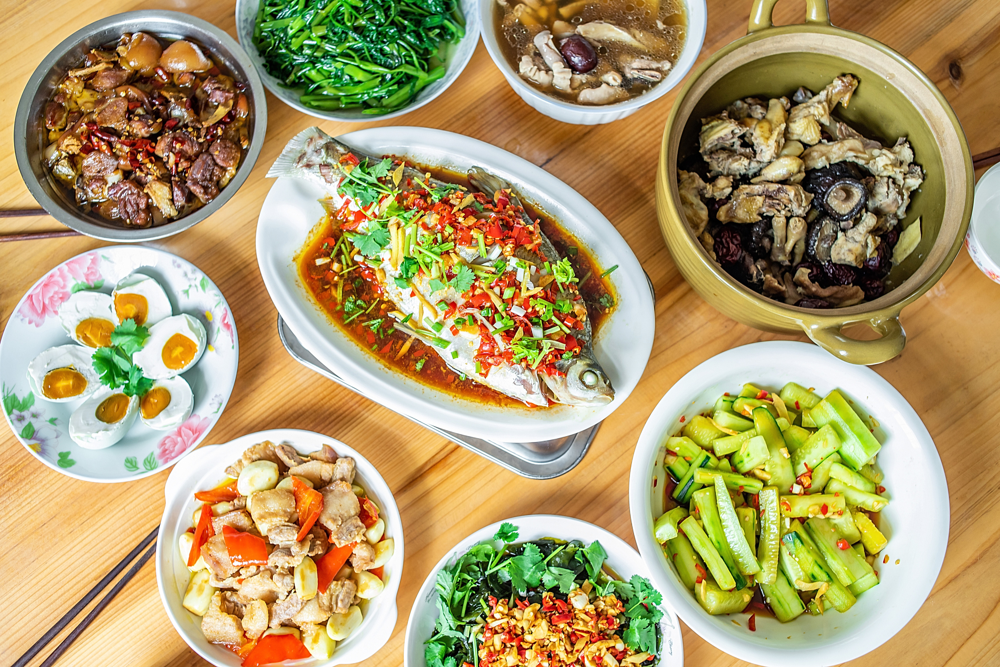
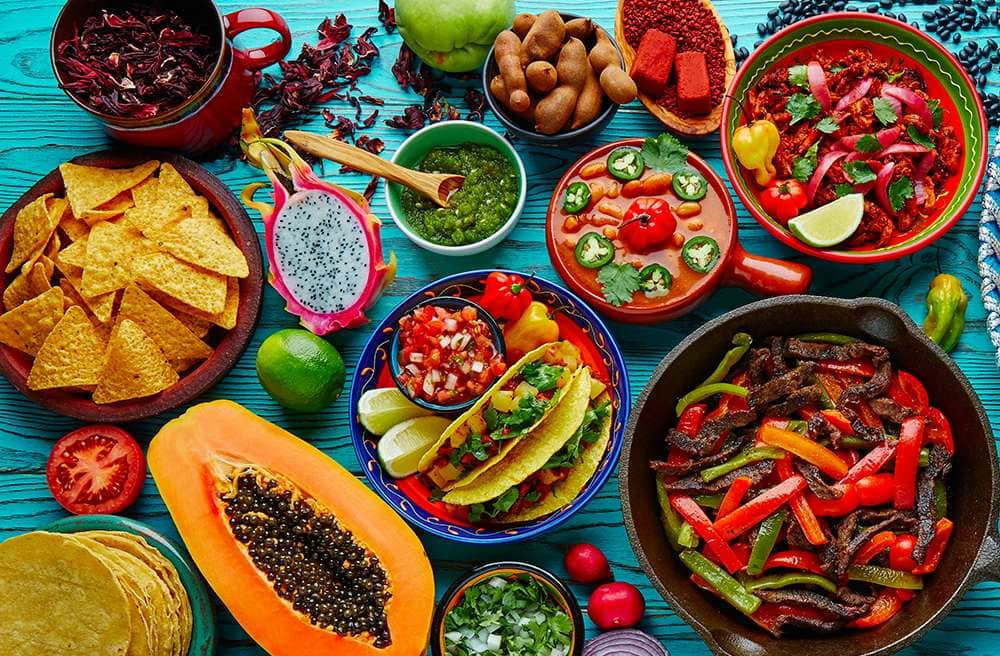
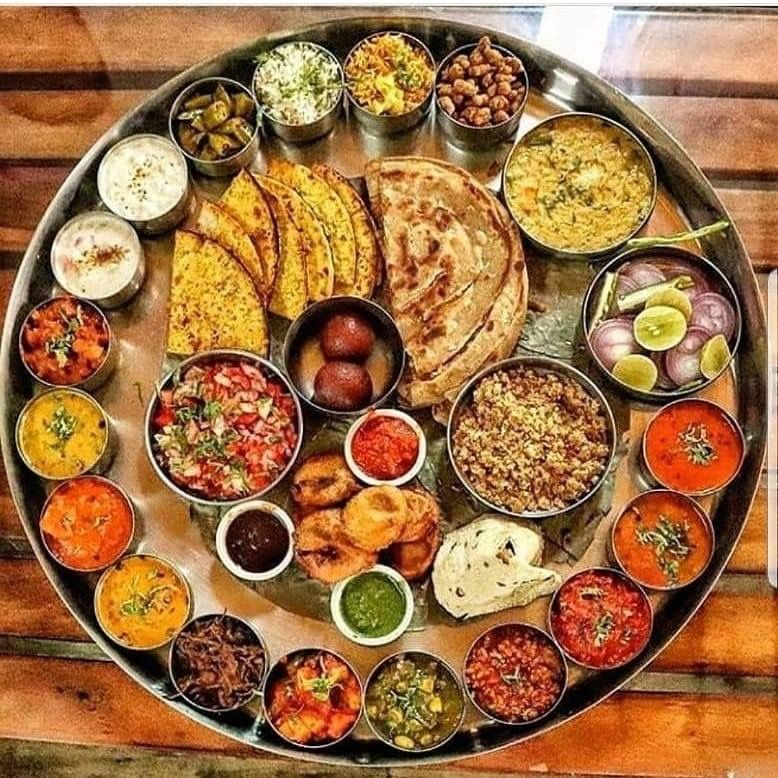

Explore Food Styles

Italian
Famous for pasta, pizzas, and savory sauces. A classic choice for lovers of rich and comforting meals.

Chinese
A wide variety of stir-fried dishes, dumplings, noodles, and flavorful sauces that offer diverse tastes.

Mexican
Bold flavors of chilies, tomatoes, and fresh herbs combined in tacos, enchiladas, and other vibrant dishes.

Indian
Diverse curries, biryanis, and tandoori dishes featuring aromatic spices and herbs.
Thai
A perfect balance of sweet, sour, salty, and spicy flavors. Popular dishes include Pad Thai and Tom Yum Soup.